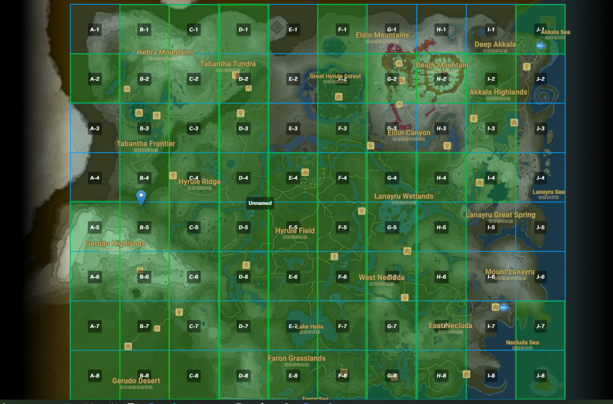
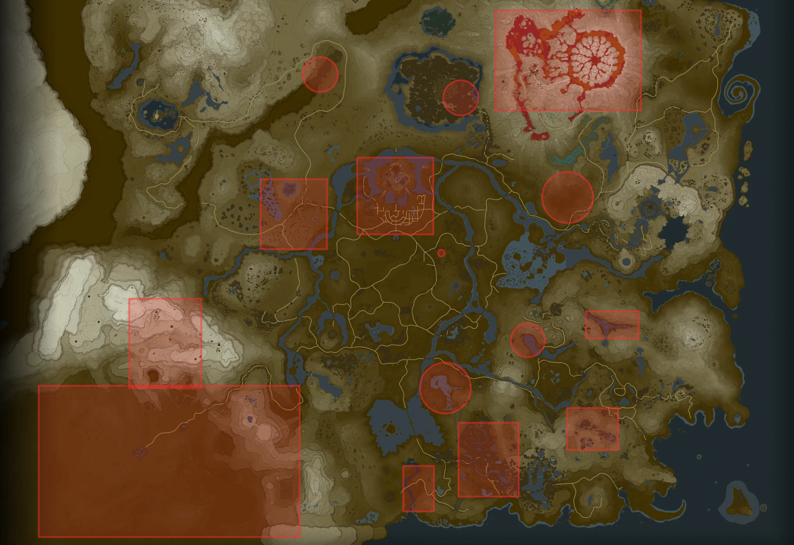

Some of you may have seen refrences to this project under the pretense of "Super Hard Botw Mod" or anything related to such title. To put it simply, Relics of the Past takes BOTW and makes it much more difficult. What's so unique about the project however, is how this difficulty is achieved; Rather than buffing the enemies or just making weapons scarcer, Relics of the Past adds the difficulty through new map changes. To be more specific, it does so in a similar fashion to how the DLC adds newly placed objects and enemies. Relics does the same but on a full world scale. This in itself creates a brand new experience while staying true to the fundamentals of the original vanilla game.
The combination of this familiarity along with the fresh experience the mod provides makes for a really fun time. The core design aspect of the mod however is difficulty, so keeping true to that, there are tons more combinations of enemies to deal with at once; You'll find yourself dealing with what feels like hordes of enemies at the same time. This approach is taken to control the space around you, thus limiting your options. Finding the answer to these situations adds to/builds skill in both situational awareness and general combat skill. To compliment this, rewards are far better in general. There are even some new custom items to add to the already vast slew of rewards you can find in this mod through overcoming challenges or just general exploration.
Welcome to the FINAL Beta before we return to the Official Releases. This update in particular we implemented a lot of big changes that we will be analyzing feedback on for the following version. In the future when Relics V3.0 becomes available, anything we note down will be implemented, so don't be afraid to give us feedback!
You can post Feedback in the Calamity Refuge Discord, where the Relics of the Past Community resides! (https://discord.com/invite/FEWRrhq)
What's New? This version introduces a ton more map changes, more quality of life changes, and even new custom enemies!
Here are some notable changes(These are NOT ALL of the changes):
New Game Plus: In Relics of the Past, one of the most dynamic aspects of the mod is the scaling rework. The scaling in Relics is designed to maintain difficulty even in the later part of the gameas well as make the rewards and drops far better. Late game is typically way more challenging and dynamic than the earlier part of the game. New Game Plus takes these late game attributes and starts you of with them at the beginning of the game. In this mode you will have all the hardest enemies complimented by the best drops and weapons. It makes for a crazy fun and challenging experience.
Below you will find some images showing marked up maps of Hyrule. These both serve a different purpose, but help outline some of what is changed in the mod.
This first image shows what parts of the map have been changed. Anything highlighted in green is an area of the map that has been modified.
This second image displays a map of Hyrule that has specific "hotspots," or points of interest you should check out highlighted in orange.
